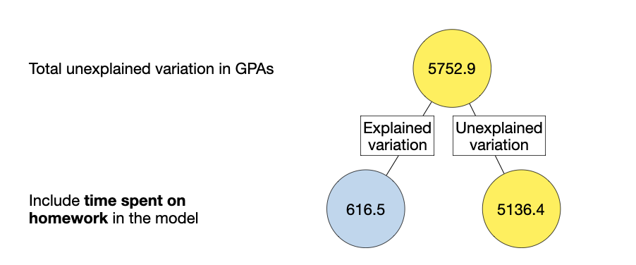

In this chapter, you will learn about carrying out an ANOVA decomposition for a multiple regression model to partition the total variation in the outcome into explained and unexplained sources. To do so, we will use the keith-gpa.csv data to examine whether time spent on homework is related to GPA. The data contain three attributes collected from a random sample of \(n=100\) 8th-grade students (see the data codebook). To begin, we will load several libraries and import the data into an object called keith. We will also fit our simple and multiple regression models.
One goal in fitting any regression is to quantify the amount of variation in the outcome that the model explains. As with the simple regression, the way we do this is via an ANOVA decomposition, computing the different sums of squares (total, model, error). The decomposition of the variation into these three parts is governed by the equation:
Prior to this the way we obtained this was to compute sum of squared errors for two different models—the model in question (SSE), and the intercept-only model (SST). Then by comparing these two SSEs we could quantify the amount of variation explained by the model (SSM). These values could also be used to compute the model’s \(R^2\) value:
Rather than fit the intercept-only model like we have in the past, we are going to instead use the anova() function to carry out the ANOVA decomposition. To illustrate this function, we will first carry out the ANOVA decomposition on a simple regression model.
# ANOVA decompositionanova(lm.a)
Analysis of Variance Table
Response: gpa
Df Sum Sq Mean Sq F value Pr(>F)
homework 1 616.5 616.54 11.763 0.0008854 ***
Residuals 98 5136.4 52.41
---
Signif. codes: 0 '***' 0.001 '**' 0.01 '*' 0.05 '.' 0.1 ' ' 1
The Sum Sq column provides the sum of squares values. In this output we have the sum of squares explained by homework (616.5) and the residual (error) sum of squares (5136.4). Since this is a simple regression model the model only encompasses the time spent on homework predictor, so the model sum of squares is 616.5. That is, in this model:
SSM = 616.5
SSE = 5136.4
The anova() output doesn’t provide the total sum of squares, but we can use out decomposition equation to compute it by summing the model and residual sum of squares:
A visualization of this partitioning is shown in Figure 15.1

Figure 15.1: Partitioning of variation associated with the simple regression model using time spent on homework to predict variation in GPA.
15.1.1 ANOVA Decomposition for Multiple Regression Model
We will no carry out an ANOVA decomposition on our multiple regression model.
# ANOVA decompositionanova(lm.c)
Analysis of Variance Table
Response: gpa
Df Sum Sq Mean Sq F value Pr(>F)
parent_ed 1 497.9 497.92 9.9010 0.002194 **
homework 1 376.8 376.81 7.4928 0.007370 **
Residuals 97 4878.2 50.29
---
Signif. codes: 0 '***' 0.001 '**' 0.01 '*' 0.05 '.' 0.1 ' ' 1
Because the multiple regression model has an additional predictor (parent education level), the output of the anova() function has an additional row. It splits the explained variation (i.e., the SS Model) into that which is explained by the parent education predictor and that which is explained by the time spent on homework predictor. Since the model includes both of these predictors, to compute the SS Model, we need to sum these two sum of squares terms.
\[
\begin{split}
\mathrm{SS_{\mathrm{Model}}} &= \mathrm{SS_{\mathrm{Parent~Education~Level}}} + \mathrm{SS_{\mathrm{HW}}} \\[2ex]
&= 497.9 + 376.8 \\[2ex]
&= 874.7
\end{split}
\] Then, to compute the SS Total we can use:
\[
\begin{split}
\mathrm{SS_{\mathrm{Total}}} &= \mathrm{SS_{\mathrm{Model}}} + \mathrm{SS_{\mathrm{Error}}} \\[2ex]
&= 874.7 + 4878.2 \\[2ex]
&= 5752.9
\end{split}
\] Notice that the SS Total is the same as in the simple regression model! This is because the outcome is still GPA and the total variation in the GPA values has not changed; it is still 5752.9. We could also use the SS Model and SS Total values to compuyte the model \(R^2\).
\[
\begin{split}
R^2 &= \frac{\mathrm{SS_{\mathrm{Model}}}}{\mathrm{SS_{\mathrm{Total}}}} \\[2ex]
&= \frac{874.7}{5752.9} \\[2ex]
&= 0.152
\end{split}
\] This is the same \(R^2\) value produced in the glance() output.
Note that the output from anova() also partitions the df among the predictor terms and the residuals. Each predictor has 1 df associated with it, which gives the model 2 df. The residuals have 97 df associated with them. The model and residual df are the df used in the F-test and given in the glance() output, namely 2 and 97. The total df in the data are \(2+97 = 99\), which is \(n-1\). Lastly, we point out that the residual df value from the anova() output (97) is the df associated with the t-tests for the coefficient-level tests (presented earlier).
15.2 Order in the lm() Mattters…Kind Of
Let’s re-fit our multiple regression model, but this time we will include time spent on homework first and parent education level second.
lm.d =lm(gpa ~1+ homework + parent_ed, data = keith)
Now let’s examine the results from the ANOVA decomposition.
# ANOVA decompositionanova(lm.d)
Analysis of Variance Table
Response: gpa
Df Sum Sq Mean Sq F value Pr(>F)
homework 1 616.5 616.54 12.2596 0.0007013 ***
parent_ed 1 258.2 258.20 5.1342 0.0256820 *
Residuals 97 4878.2 50.29
---
Signif. codes: 0 '***' 0.001 '**' 0.01 '*' 0.05 '.' 0.1 ' ' 1
In this decomposition time spent on homework has a SS value of 616.5 and parent education level has a SS value of 258.2. This is quite different than the SS we obtained from the model where parent education level was put in the model before time spent on homework. The residual SS are the same as in the previous model’s decomposition (4878.2). Let’s compute the Model SS using these new values.
\[
\begin{split}
\mathrm{SS_{\mathrm{Model}}} &= \mathrm{SS_{\mathrm{Parent~Education~Level}}} + \mathrm{SS_{\mathrm{HW}}} \\[2ex]
&= 258.2 + 616.5 \\[2ex]
&= 874.7
\end{split}
\] The Model SS is the same regardless of order of the predictors in lm(). This implies that our model \(R^2\) value will also be the same regardless of order of order of the predictors in lm().
15.2.1 Danger: Using the ANOVA Decomposition at the Individual Predictor Level
The fact that the SS values change depending on the order you put the the predictors in the lm() function implies that it is difficult to come up with a quantification for the amount of variation that an individual predictor explains in a multiple regression model. For example, say we wanted to compute the explained variation for time spent on homework on GPA (our focal predictor). If we use the ANOVA decomposition from Model C, we would say it explains 376.8 of the total 5752.9, and we could compute its \(R^2\) value as:
If, however, we use the ANOVA decomposition from Model D, we would say it explains 616.5 of the total 5752.9, and we could compute its \(R^2\) value as:
\[
\begin{split}
R^2_{\mathrm{HW}} &= \frac{616.5}{5752.9} \\[2ex]
&= 0.107
\end{split}
\] This is almost double the explained percentage as in Model C! Moreover, which one of these is “correct” depends on what you are trying to answer by getting this percentage, and it may be that neither is correct. In general it is advisable to only use the ANOVA decomposition to compute sum of squares for the Model, Residuals, and Total, and not use it to compute SS for individual predictors.
Most of the time researchers who undertake this are trying to determine which predictor is more important. In general it is not a good idea to use an ANOVA decomposition to evaluate this. Instead, look at the coefficients to assess importance. Is parent education level or time spent on homework more important? Each 1-unit difference in parent education level is associated with a 0.87-grade point difference while a 1-unit difference in time spent on homework is associated with a 0.99-grade point difference. It seems time spent on homework has a larger effect than parent education level.1
If you are worried about the difference in metric—years versus hours—you can fit a standardized regression which puts both predictors on the same metric. In this example the homework coefficient from the standardized regression (0.27) is still larger than that for parent education level (0.22) indicating time spent on homework has a larger effect on GPA than parent education level.↩︎